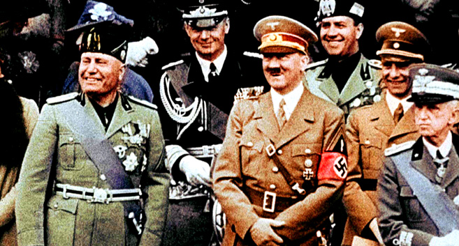

- IV -
Nous voulons donner cinq ans de paix et
de travail fecund au people italien.
MUSSOLINI
KẺ XA LẠ
Mussolini bước vào chính quyền, một thế giới mà ông còn là kẻ xa lạ. Lại kiêm nhiệm luôn cả hai bộ quan trọng nhất, nội vụ và ngoại giao. Những ngày đầu chập chững, đầu óc Mussolini bị giằng xé giữa hai cảm tưởng, một mặt muốn cầm cái chổi quét sạch hết mọi vết tích cũ, một mặt cũng thấy hành động ôn hòa rất cần thiết lúc này.Quyền lợi danh dự nước Ý dĩ nhiên phải đặt lên trên hết nhưng quan hệ quốc tế đâu có kém phần quan trọng.
Bắt tay vào việc ngoại giao, hôm 1 tháng 11 năm 1922, Mussolini tiếp đại sứ anh quốc Sir Ronald Graham. Vị đại sứ anh cho biết lãnh tụ Mussolini rất bình tĩnh, ông ta cân nhắc nói năng rất kỹ càng. Sauk hi thảo luận rộng rãi các vấn đề quốc tế, ông thú thực chưa rành rẽ lắm về mặt này. Ông đưa ra trước đề nghị đặt quan hệ tốt đẹp và hợp tác chặt chẽ với nước Anh. Tôi ( đại sứ Anh) hỏi ông có buồn bực gì trước những lời phê bình về ông trên báo chí Anh, ông trả lời cũng đã quên hẳn mọi lời khi con người nói một cách vô trách nhiệm.Đại sứ Anh Graham tỏ vẻ hài lòng vì ông cứ đinh ninh rằng sẽ phải nói chuyện với con người nóng nẩy như lửa. Gặp Mussolini rồi, Graham thấy: “ Mussolini was a man with whom one could do business”.
Ngày 18 tháng 11, Mussolini rời Rome đi Lausanne để tham dự hội nghị quốc tế cho vấn đề Thổ nhĩ kỳ. Đây là một hội nghị khá quan trọng vì biến cố ở Chanak vừa xảy ra có thể đưa tới chiến tranh. Lord Curzon của Anh quốc cho hay, ông sẽ không đến hội nghị nếu chưa biết chắc Ý, Anh,Pháp sẽ thỏa thuận lập chung một mặt trận. Tổng thống Pháp tuy khó chịu với yêu sách này nhưng vẫn gửi nó cho Mussolini, đồng thời, mời thủ tướng Ý đến Lausanne chiều ngày 19 thangs11 trước khi hội nghị khai mạc.
Chuyến xe lửa đi Lausanne, dọc đường cứ đến mỗi ga lại có dân chúng đứng đông nghẹt chờ đón reo hò hoan hô vị thủ tướng mới của nước Ý đi ra nước ngoài để tranh đấu bảo vệ cho quyền lợi tổ quốc mà trước đây bị quốc tế cướp đoạt. Lòng nhiệt thành của dân chúng lên cao độ khiến những chuyên viên ngoại giao tháp tùng Mussolini phải lo ngại không biết rồi ông sẽ lấy nổi được những gì ở Lausanne đem về cho dân chúng.
Tổng thống Pháp tới chẳng thấy Mussolini đâu cả, bèn hỏi các nhà ngoại giao Pháp: “ Mais où est ce qu’il est ce salaud?”
Mussolini không đến thẳng Lausanne, ông nghĩ ra một trò ngoạn mục, bảo tổng thư ký bộ ngoại giao gửi công hàm cho Poincaré và Lord Curzon mời hai vị nguyên thủ Anh – Pháp tới Lerritet gặp mình trước khi thật sự họp bàn ở Lausanne.
Nhận điện văn, cả Poincaré lẫn Curzon đều sửng sốt nhưng họ hiểu ngay Mussolini muốn gây cho mình chút uy tín với dân chúng Ý, nên hai ông cũng vui lòng “chiều” Mussolini. Territet chỉ cách Lausanne 20 cây số. Mussolini bận bộ đồ “redingote”, giầy đen, mang điểm them hai miếng “ghệt”màu trắng, tay cầm cái can vừa nặng, đang đứng chờ nơi đại sảnh trong Grand Hotel. Bên ngoài, đội quân nhạc ý chơi bài Giovenezza.
Mussolini chẳng hỏi chuyên viên lấy một lời, ông đề nghị luôn cùng tổng thống Pháp và thủ tướng Anh họp mặt riêng ba người thôi…các nhà ngoại giao Ý điếng hồn, Mussolini đã hiểu lắm gì về chính trị quốc tế đâu mà dám cả gan như vậy. Nhưng không, một điều lạ lung là Musslini lại đạt được những gì ông muốn. Anh Pháp nói chuyện với Ý trên tư thế bình đẳng, Ý một sớm một chiều đi ra khỏi tình trạng lép vế lưu cữu sáu bảy năm nay. Lần gặp gỡ thứ nhì, Mussolini vẫn chơi trò cũ nghĩa là đến muộn nhất. Poincaré cáu ra mặt, còn Lord Curzon chỉ mỉm cười yêu cầu hội nghị nhẫn nại ngồi chờ. Ông không chú trọng mấy đến cử chỉ mà chỉ cần Mussolini thật sự cộng tác với Anh thôi.

Benito Mussolini
Qua nhận xét của Sir Harold Nicholson, ông thấy Mussolini kém thoải mái, luôn luôn ngọ nguậy, khó chịu với cái cổ cồn”cravate”
Nicholson viết: “Mussolini – a shade embarrassed by being thus confronted at his first diplomatic conference by such giants of the profession – chafed uneasily against his stiff white cuffs, rolling important eyes. He said little. Je suis d’accord was the most important thing he said”.
( Ông ta có một dáng dấp khá lúng túng khi phải đương đầu lần thứ nhất với một hội nghị quốc tế bên cạnh các chính khách nhà nghề - người ta thấy ông luôn luôn đảo mắt với một vẻ quan trọng và trườn trườn cái cổ vì cổ cồn “caravate” cứng quá làm ông khó chịu. Mussolini nói ít lắm. Chỉ có câu Je suis d’accord là được nghe thấy nhiều trên miệng ông.)
Lord Curzon nghĩ sao đối với Mussolini? Căn cứ vào những bức thư viết về Anh thì Lord Curzon nguyên phó vương bên Ấn độ, một loại người quý tộc điển hình của Anh quốc, lại rất có thiện cảm với nhà lãnh tụ xuất thân bần cùng. Curzon bảo Mussolini là người trẻ tuổi mang cá tính vững mạnh.
Tờ “ Time” của Anh viết: “Phát xit là một sự phản động lành mạnh để chống chủ nghĩa Bôn sê vích” (Le fascisme est une eaction salutaire contre le bolchevisme).
Tháng 12 năm 1922, Mussolini thăm viếng thành phố Luân đôn. Báo chí Anh tả hình dáng nhà lãnh tụ phát xit như một pho tượng hoàn mỹ: mắt sáng long lanh, nét mặt thép, thân hình nở nang.
Những vẻ vang bên ngoài nước làm cho uy tín Mussolini tăng lên. Nắm lấy cơ hội, ông củng cố thế lực của mình. Chính sách đối nội ban đầu đặt trên nền tảng hòa giải nhằm vãn hồi trật tự, chấm dứt bạo động, quyền lợi quốc gia đi trước quyền lợi đảng.Chính sách ấy khả dĩ thu gọn vào ba chữ:Kinh tế, Cần lao và Kỷ luật. Mussolini hứa thực hiện mọi chương trình của chính phủ ông với sự tôn trọng hiến pháp. Tuy nhiên, ông vẫn đưa cái giọng phát xit vào những bài diễn văn ở quốc hội:
“Cách mạng có quyền thế của nó và tôi đứng đây để bảo vệ cùng phát triển cuộc cách mạng của những người mặc áo sơ mi đen. Tôi đã từ chối không xử dụng biện pháp chinh phục mà tôi từng làm. Tôi cố gắng tự hạn chế trong mọi hoạt động. Với hơn ba trăm ngàn đảng viên vũ trang đầy đủ, dám làm, sẵn sàng tuân lệnh tôi có thể trừng phạt tất cả kẻ nào đã phỉ báng, vu khống, bôi nhọ phát xit. Tôi cũng có thể xua quân chiếm tòa nhà yếu ớt này, giải tán quốc hội để xây dựng một chính phủ hoàn toàn phát xit. Nhưng tôi đã không làm thế vì thế không phải là sự mong muốn của tôi…”
Để kết luận, ông xin Quốc hội trao toàn quyền tài chính và chính trị đến toàn bộ hệ thống thư lại cho mình, nửa đe dọa, nửa kêu gọi sự cộng tác. Ông nói:
“ Tôi cố, hết sức tránh đến mức tối đa cái cảnh cai trị ngược lại ý muốn của quốc hội, tuy nhiên Quốc hội cũng phải xét tình thế đặc biệt hiện tại, không phải cứ mỗi lúc bằng lòng rồi lại bãi bỏ trong vài ngày hay vài tháng. Tôi đòi hỏi được toàn quyền vì tôi muốn gánh hết trách nhiệm. Nếu không được toàn quyền thì như quý vị đã rõ, chúng ta khó lòng chống nổi đà lãng phí khi chúng ta cần dành dụm từng xu”.
Sau khi trói tay Quốc hội, Mussolini khởi sự chiến dịch tuyên truyền thần thánh hóa cá nhân mình trên khắp các nẻo hang cùng ngõ hẻm nước Ý.
Tờ “Popolo” bây giờ giao cho người anh em của Mussolini là Arnaldo điều khiển. Số đề ngày 15 tháng 11, Đăng tải một bài ca tụng vị thủ tướng mới của cựu thủ tướng Giolitti với những “ sous titre” in chữ đậm: “ Nội các Mussolini là nội các duy nhất có thể mang lại hòa bình xã hội. Chúng ta phải ủng hộ nội các này. Đất nước đang cần một chính phủ mạnh, một chính phủ không sống lập lờ như những chính phủ trước. Đời sống chính trị Ý đang cần sức lực mới, bần máu mới.”
Cũng chính Giolitti là người đã đứng lên nói lớn trong quốc hội lúc Mussolini đòi toàn quyền: “ J’approuve pleinement le discours du president du Conseil” trong khi hai dân biểu xã hội Modigliani và Mattéotti la lên: “ Vive le Parlement” để đuổi Mussolini xuống.
Mặc dầu đảng xã hội cố gắng chiến đấu, nhưng Mussolini vẫn thắng 306 phiếu thuận 116 phiếu chống.
Ngày 15 tháng 12 năm 1922, Mussolini triệu tập tất cả các nhân vật lãnh đạo phát xit để thành lập một Hội đồng phát xit tối cao (Grand Conseil Du Fascisme). Hội đồng này cứ mỗi tháng họp một lần để bàn thảo mọi vấn đề đảng cũng như mọi vấn đề quốc gia.
Báo chí ngoại quốc gọi hội đồng tối cao này như một hành động nhằm phát xit hóa quốc gia.
Cùng trong hôm ấy còn tổ chức quan trọng hơn cả hội đồng tối cao nữa ra đời, đó là “ Đoàn chí nguyện bảo vệ an ninh quốc gia” ( Milice volontaire pour la sécurité nationale). Đoàn quân chí nguyện chỉ chịu mệnh lệnh của Mussolini thôi, chứ không tuyên thệ trung thành với nhà vua, những đội quân của đoàn chí nguyện được gọi là Squadristi.
Thành tích của nó có ngay hai ngày sau, tại tỉnh quê hương của lãnh tụ cộng sản Gramsci đã có cuộc xung đột chân tay vì bênh phát xit và chống phát xit. Hai đảng viên phát xit chết. Đoàn chí nguyện phát xit quyết báo thù bằng cách tấn công bằng dao, báng súng, gậy gộc giết hơn hai chục mạng người chống phát xit hay tỏ vẻ ghét hành động bạo lực của phát xit, nhiều trụ sở thợ thuyền bị đốt phá. Trả thù xong Brandimarte người cầm đầu tuyên bố: “ Chúng tao có đầy đủ danh sách 3000 thằng cần phải thanh toán. Đây chỉ là bài học nhẹ cho bọn chống phát xit”.
Ngày 8 tháng 1 năm 1923, Mussolini tỏ ra cứng rắn hơn nữa qua câu nói: “ Phát xit không chỉ chống đỡ mà còn tấn công, phát xit đã bước qua cái xác nữ thần Tự do, nếu thấy là tốt Phát xit sẽ quay lại dẫm lên cái xác đã thối rữa ấy lần nữa”.
Nhiều đảng viên đảng xã hội bị bắt, nhiều hiệp hội công nhân bị giải tán, những dân biểu chống phát xit bị hạn chế di chuyển.
Ddosnanf chí nguyện quân phát xit mặc đồng phục sơ mi đen, quần xanh xám, mũ to rộng vành, ăn lương tháng. Quân ngự lâm của nhà vua bị giải tán. Đảng phát xit người ghi tên mỗi ngày một đông đến nỗi đảng phải khóa sổ không kết nạp nữa.
Báo chí hang ngày dành một cột danh dự đăng những ý kiến của Mussolini về mọi vấn đề và truyền bá ý thức hệ phát xit.
Đảng Bình dân của Don Sturzo qua đại hội hop ở Turin, quyết định hoàn toàn tín nhiệm chính phủ. Nhưng Mussolini vẫn giữ mối thù Don Sturzo nên ông đẩy các bộ trưởng của đảng Bình dân ra khỏi nội các. Mặt khác, ông triệt để thi hành đường lối o bế tòa thánh bằng cách đem trở lại giáo lý công giáo vào cấp bậc trung tiểu học. Trường và tòa án phải treo thánh giá.
Ngày 10 tháng 7 năm 1923, Don Sturzo từ chức lãnh đạo đảng Bình dân. Diệt thêm được một kẻ thù nữa rồi, Mussolini liền đề nghị giải tán quốc hội tuyển cử lại.
Luật bầu cử do Mussolini chỉ định cán bộ phát xit cao cấp Acerbo thảo. Cho đến bây giờ, đại biểu phát xít ở trong quốc hội vẫn chỉ có 35 người.
Tuyển cử lại để phat xit giữ nửa số ghế hay hơn. Để áp đặt đề nghị, Mussolini cho tập trung đoàn chí nguyện an ninh quốc gia về Rome thật đông, rồi ông mới lên diễn đàn biện luận. Vừa bước lên, các dân biểu tả phái phản đối ầm ĩ. Mussolini quát vào tai họ:
“Các người quên một điều rất đơn giản là cách mạng có quyền tự bảo vệ. Còn các người chỉ biết ủng hộ chế độ Nga, các người chẳng có quyền gì phản đối chế độ của tôi”.
Mussolini thắng bằng 303 phiếu. Chống đối chỉ có 40. Từ đấy về sau, không ngày nào Mussolini không ký một sắc luật mới hạn chế dần dần tự do của Ý quốc.
Tính Mussolini thích trò rầm rộ đến độ quá lố, như vụ ông đem chiến hạm dàn trận để chiếm quần đảo Doescanèse mà từ 10 năm nay chúng vẫn thuộc về Ý, chỉ lơ thơ có mấy ngư phủ thú ngụ. Mở cuộc hành quân chiếm đảo, Mussolini mong sẽ chính thức tuyên sát nhập vào nước Ý để chứng tỏ một thắng lợi ngoại giao mới. Một nhân viên ngoại giao Ý, ông Guariglia, thấy sự việc buồn cười nên vào can thủ tướng. Mussolini đành bãi bỏ cuộc hành quân, nhưng đồng thời ông cũng tống cổ Guariglia ra khỏi bộ ngoại giao.
Lần khác, Mussolini lên tiếng với một vẻ nghiêm trọng ủng hộ Pháp Bỉ chiếm đóng hạt Ruhr rồi hô hào tổ chức khối Âu châu đại lục và thị trường chung về than và thép, chống lại sự xâm lăng của Anh quốc.
Chỉ chừng vài tháng sau, ông đã quên phứt cái khối đại lục Âu châu kia, tiếp đón cực trọng thể hoàng gia Anh viếng thăm Rome. Ông cùng Lord Curzon đọc những bài diễn văn hết sức thân thiện, hứa hẹn một sự hợp tác khắp các mặt giữa Anh và Ý.
Ngày 27 tháng 8 năm 1923, khoảng 9 giờ sáng, trên con đường từ Janina đi Santi Quaranta, còn ở lãnh thổ Hy lạp, một chiếc xe chở 5 sĩ quan Ý (do hội nghị các đại sứ gửi đi để điều tra tại chỗ vấn đề biên giới Ý và An ba ni) bị chặn lại và tấn công bằng súng. Những người trên xe chết hết trong đó có thiếu tướng Tellini, mặt nát bấy vì báng súng. Báo chí xôn xao cho rằng đây là một cuộc ám sát chính trị man rợ nhất lịch sử Âu châu văn minh. Biểu tình hàng loạt trước tòa lãnh sự Hy lạp.
Mussolini thức suốt đêm để xem xét vấn đề.
Ngày 29 tháng 8, Ý cho công bố bức tối hậu thư lời lẽ buộc Hy lạp phải chịu đầu hàng nhục nhã.
Ngày 31 tháng 8, đô đốc Solari mang đội pháo hạm tới bắn phá rồi chiếm cứ thành Corfon.
Hội Quốc liên (S.D.N.) bị báo chí Ý thóa mạ là một cơ cấu quốc tế chẳng ra gì, ấu trĩ và lỗi thời, phục vụ quyền lợi đế quốc Anh.
Mussolini duyệt xét tình hình với đô đốc Thaon di Ravel, đặt vấn đề nếu có chiến tranh giữa Anh và Ý. Thấy tương quan lực lượng thế yếu ngả về phía Ý nên ông đành ra lệnh rút quân khỏi Corfon, cũng ầm ĩ như lúc chiếm và nhận của Hy 50 triệu đồng lires tiền bồi thường. Dân Ý nhất là tầng lớp tiểu tư sản cũng rất sung sướng vì lãnh tụ phát xit đã trừng phạt đích đáng kẻ gây ra tội ác. Bây giờ tại chính trường quốc tế Ý có hạng lắm rồi, chẳng phải như thời kỳ Giolitti phải rút nhục nhã khỏi Valona.
Qua vụ Corfon, Mussolini biết được rằng các nước dân chủ đồng minh không bao giờ hoàn toàn hòa thuận với nhau. Nước Ý có thể qua mâu thuẫn này mà bành trướng thế lực thuộc địa.
Bên Đức có một người say mê theo dõi Mussolini và đảng phát xit đó là Adolf Hitler, lãnh tụ đảng Quốc xã Đức.
Cuối tháng 9 năm 1922, Hitler gửi Karl Ludecke qua Milan để liên lạc với lãnh tụ phát xit. Ludecke trở về tán tụng phát xit hết lời, đồng thời cho ý kiến anh em quốc xã nên bắt chước phát xit trong vụ tiến quân về Rome.
Hitler từ đấy có quyết định làm cú “putsch” kiểu Ý, khởi sự từ Munich trước rồi Berlin sau.

Mussolini và Hitler
Tháng 8 năm 1923, Ludecke qua Ý lần nữa thỉnh cầu sự giúp đỡ tài chính của phát xit, đổi lại nếu Quốc xã thắng, sẽ trả lại toàn vùng Nam xứ Tyrol. Để đảm bảo, Hitler nhận lời cho báo “Corriere Italiano” phỏng vấn, ông nói rõ ràng về chính sách của Quốc xã về miền Nam Tyrol, ông cũng tỏ ý thán phục Mussolini vô cùng.
Ngày 8 tháng 11 năm 1923, A’dolf Hitler thất bại với cú “putsch” kiểu phát xit, ( Xin đọc: “Adolf Hitler và đảng Quốc xã” ) rồi bị bắt cầm tù. Ra tòa, Hitler còn không ngớt ca tụng Mussolini với những chính sách diệt Do Thái, chống Mác xit cùng bọn “Franc macon”.
Trong nhà tù Landsberg, Hitler viết cuốn “ MeinKamf” tiếp tục nhắc tới vấn đề Nam Tyrol, chính thức nhận Nam Tyrol là của nước Ý, Đức và Ý đừng nên vì mảnh đất nhỏ ấy mà gây thành chia rẽ. Nhờ đường lối hết lòng thân thiện với phát xit, nên sau vụ thất bại nhiều lãnh tụ Quốc xã tìm được chốn dung thân bên Ý. Goering và Frank ở Rome thường vào gặp lãnh tụ phát xit luôn.
Chính sách đối ngoại của Mussolini mang nhiều sơ hở nhưng không vì thế mà uy tín lãnh tụ bị sứt mẻ trong nước. Hầu hết dân Ý đều đồng ý với lời phê phán của đức Giáo hoàng Pie XI:
“ Mussolini không phải là Napoléon hay Cavour, tuy nhiên, bây giờ chỉ có một mình ông ta là hiểu đúng những gì cần làm cho xứ sở để chống lại tình trạng hỗn loạn khiến chính sách nghị hội trở nên vô dụng từ ba năm nay. Mussolini đã kéo được cả nước đi theo ông ấy. Mong rằng ông sẽ có thể gây dựng lại quê hương. Cầu xin Thượng đế hãy soi sáng cho chúng ta.”
Cựu thủ tướng Nitti viết thư cho Amendola (Xã hội):
“Hãy để cho phát xit yên ổn đối phó với thử thách lịch sử, đừng gây xáo trộn. Riêng phần chúng tôi không chống đối dù chúng tôi không gia nhập đảng phát xit”.
Ở Rome, Mussolini sống một mình. Ông để Rechèle và con cái lại Milan. Đau dạ dày nên cơm ăn rất đạm bạc do bà quản gia tên Carocci nấu nướng hầu hạ. Tới nhà tư của lãnh tụ phát xit, người ta có cảm tưởng đây là một thứ “ garconnière”, nếp sống của ông như nếp sống của chàng trai độc thân. Ông có khá đông người tình và thường tiếp họ tại nhà này. Trong tình ái, Mussolini chỉ có một lối chinh phục là sức mạnh tàn bạo. Nhiều lần, ông làm tình khi ông còn vận áo đen đeo đầy huy chương vì vừa đi dự một đại lễ về.
Mỗi lần rời lâu đài Tittoni, ông hay đi chiếc xe “sport” mầu đỏ mở hết tốc lực.
Rất say sưa với quyền bính đôi khi đến bàng hoàng bởi lẽ ông không thể ngờ rằng ông có một ngày đứng ngang hàng những người vĩ đại trên thế giới. Ông đích thân đọc danh sách những người nào bị báo cáo là không thân phát xit hoặc danh sách những người mua báo hàng tháng các loại báo phản phát xit. Xem xong, ông lấy bút đỏ gạch từng tên tùy theo địa phương gửi tới các phân bộ phát xit dưới ghi mấy chữ: Tỉnh này ghét phát xit rồi sao? Ông coi chính trị, đảng phát xit và quốc gia như của riêng. Kẻ nào chống đối phát xit, ông đều dùng một biện pháp là làm cho kẻ đó khó sống. Ông bảo chủ tỉnh Turin đối đãi với Gobetti, kẻ thù chính trị của ông rằng: Hãy về làm cho thằng Gobetti, kẻ thù của đảng phát xit và của chính phủ biết thế nào là khó sống!
Mussolini thường bảo mọi người: “ Mưu toan chia rẽ Mussolini với phát xit hay phát xit với Mussolini là mưu toan không bao giờ thành tựu nó cũng là mưu toan ngu xuẩn kệch cỡm ngoài sức tưởng tượng”.
Tháng 1 năm 1924, sau thời gian điều đình Nam Tư ký hiệp ước với Ý trả lại tỉnh Fiume, thêm một thành công rực rỡ cho Mussolini.
Ngày 25 tháng 1, Quốc hội bị giải tán, sẽ có cuộc bầu cử vào ngày 6 tháng 4, theo thể thức mới.
Hôm 27 tháng 1, đảng Bình dân ra tuyên cáo nói:
“ Thể thức tuyển cử mới sẽ đặt các đảng viên độc lập vào một thế bí trói tay, như vậy ý dân sẽ chẳng còn trung thực nữa” ( Le nouveau système electoral place les partis indépendants en plein situation d’infériorité, la manifestation de la volonté populaire est travestie).
Thể thức tuyển cử mới là đầu mối cho sự hỗn loạn mới. Cũng như lần trước, phát xit lại sử dụng bạo lực đến mức tối đa theo lời truyền của Mussolini: “ Hãy làm một lần cho mãi mãi, kẻ nào chống chúng ta sẽ ăn đạn chì. Đứng trước vẫn đề liên quan đến vận mạng đất nước, liên quan đến đảng phát xit, chúng ta sẵn sàng giết và chết”.
“Prêts à tuer”, đảng viên phát xit gào lên.
Thế là ứng cử viên xã hội Piccini bị bắn ba phát vào lưng, các nhà báo bị sơi “ Ma trắc” vào đầu, các tỉnh bị đặt trong tình trạng giới nghiêm, các lãnh tụ xã hội như Turati, Amendola không còn chỗ đọc diễn thuyết. Dân biểu Mattéotti bị trùm mền lên người mang ra bỏ giữa cánh đồng hoang vắng, những ứng cử viên không có cách gì lấy được đủ giấy tờ hợp lệ.
Kết quả tuyển cử phát xit chiếm 275 ghế, người của chính phủ được 100 ghế, các đảng khác chia nhau số ghế còn lại như sau:
- Bình dân : 40
- Dân chủ : 25
- Danh sách Giolitti : 25
- Cộng sản : 19
- Xã hội : 29
- Cộng hòa : 8
Ngày 5 tháng 5, đứng trước quần chúng ở Palerme, mặc dầu phát xit đã toàn thắng trong cuộc tuyển cử, Mussolini vẫn giữ giọng đe dọa:
“Nếu cần, anh em có sẵn sàng quét sạch tất cả những gì hết lý do tồn tại trên đất nước chúng ta không?”
Bên dưới, đám quần chúng thét lên: “ Sẵn sàng!”.
CÁI CHẾT CỦA DÂN BIỂU MATTEOTTI
Ngày 24 tháng 5, Quốc hội mới họp phiên đầu tiên.
Ngày 30 tháng 5, trụ sở quốc hội sôi nổi lạ thường, trong ngoài dầy đặc những người mặc áo sơ mi đen trang bị vũ khí.
Ông chủ tịch Alfredo Rocco tuyên bố hai dân biểu Labriola và Mattéotti vừa đưa phản kháng cho kết quả cuộc bầu cử vô giá trị vì nhiều điểm pháp lý. Mattéotti lên diễn đàn, dáng dấp nhỏ nhắn nhưng vẻ mặt cương quyết, trán cao rộng. Tròng mắt sâu của nhiều đêm không ngủ và suy tư.
Mattéotti có một gia sản lớn ở vùng Rovigo nhưng ông lại là người hăng say với chủ nghĩa xã hội hơn hết cho nên Mussolini thường gọi diễu Mattéotti bằng cái tên “ông triệu phú”. Ông được bầu làm dân biểu qua nhưng lần tuyển cử năm 1919 – 1921 – 1924. Năm nay ông 39 tuổi.
Từ sáng sớm, Mattéotti đã cho phân phát cuốn sách nhỏ bé nhan đề: “ Một năm dưới chế độ phát xit” do chính ông sưu tập tất cả những hành động bạo ngược của phát xit. Cuốn sách cãng có ghi lại những lời Mussolini nói khi lãnh tụ phát xit còn là một đảng viên vô chính phủ, đảng viên xã hội Mattéotti nói trên diễn đàn:
“Bây giờ chẳng còn ai được tự do nữa bởi vì mỗi công dân đều biết rõ rằng nếu có dám phát biểu chăng nữa dù họ có đa số chăng nữa thì họ cũng không dám đối lập vì sợ sự trả lời bằng bạo lực của chính phủ phát xit”.
Dân biểu phát xit Farinacci la lớn:
“ vậy các anh hãy làm cách mạng đi!”.
Mattéotti đáp:
“Dưới bàn tay đầy máu của đoàn chí nguyện phát xit dân chúng đã kiệt sức để làm cách mạng”.
Một dân biểu phát xit khác nói:
“ Các đoàn chí nguyện đỏ của các anh ở đâu?”
Mattéotti bình thản chờ cho sự la ó lắng xuống, lại tiếp tục tố giác những vi phạm trắng trợn luật bầu cử của phe phát xit như bắn phá, chém giết.
Farinacci bảo:
“Theo dân biểu Matteotti thì chúng tôi sẽ phải làm những gì từ trước đến nay chúng tôi đã không làm?”
“ Bao giờ quý vị chẳng làm cái nghề của quý vị.”
Chủ tịch Rocco (thân phát xit) cảnh cáo:
“Dân biểu Matteotti nếu muốn xin hãy gìn giữ khôn ngoan lời nói”.
Mattéotti đáp:
“Ở đây tôi không xin được nói khôn ngoan hay không khôn ngoan mà chỉ xin được nói như một người trên diễn đàn quốc hội” ( Je ne demande pas à parler prudemment ou imprudemment mais parlementairement).
Các dân biểu phát xit đều tức sùi bọt mép, họ cùng nói lẫn lộn:
“ Chúng ông sẽ dậy cho mầy bài học bằng bang sung đập vào lưng để mày biết phải trọng nể chúng ông như thế nào! Cút về Nga đi!”
Mattéotti kết luận:
“Chúng tôi nhân danh chủ quyền tự do của nhân dân đòi hủy bỏ kết quả cuộc bầu cử này”.
Mussolini ngồi lặng trên ghế suốt hai tiếng đồng hồ không nhúc nhích.
Khi ra về, Mattéotti nói đùa với bằng hữu:
“Kể từ hôm nay các bạn có thể sửa soạn viết cho tôi một bài điếu văn”.
Tờ “ Popolo” xuất bản ngày 1 tháng 6 viết:
“Quốc hội đã có một sức chịu đựng phi thường trước bài diễn văn khiêu khích của dân biểu Mattéotti”.
Chưa thôi, hôm 4 tháng 6, Mattéotti còn nói nữa. Lần này, ông đưa ra nhiều chứng cớ khiến Mussolini không thể ngồi im được. Lãnh tụ phát xit đứng phắt dậy chỉ về phía các dân biểu cánh tả mà bảo:
“Ở bên Nga có nhiều vị thấy thật giỏi, rất tiếc tôi đã không bắt chước họ. Nếu tôi làm theo họ thì giờ đây các người đang ở trong tù hoặc chịu một viên đạn thủng ngực”.
Tiếng vỗ tay nổi lên. Mussolini tiếp:
“tuy nhiên, chúng tôi cũng thừa can đảm để làm hơn như thế. Vả chăng hãy còn dư thời giờ để các người ngạc nhiên”.
Ngày 7 tháng 6, Quốc hội chấp nhận bằng 361 phiếu chống, 107 phiếu phản kháng.
Mussolini đè bẹp đối phương nhưng mối thù với dân biểu Mattéotti, vẫn chẳng thể quên đi được.
Ngày 10 tháng 6 năm 1924. Phiên họp chiều tại quốc hội vắng mặt dân biểu Mattéotti. Mọi người không mấy chú ý. Nhưng gia đình Mattéotti thì lo ngại vô cùng và cho Quốc hội biết, Mattéotti đã ra khỏi nhà từ lúc trưa, đi bộ tới Quốc hội.
Ngày 11 tháng 6 năm 1924, Fasciolo, viên thư ký riêng của Mussolini báo cho ông hay tin dân biểu Mattéotti bị ám sát chết.
Sự việc này ra sao?
Hôm 10, Mattéotti rời khỏi nhà số 40 đường Pisanelli để đến Quốc hội. Người công an chìm vẫn đi theo bảo vệ cho dân biểu đã không làm bổn phận thường lệ. Trời nóng bức, dọc bờ sông Tibre vắng hoe. Một chiếc xe hiệu Lancia mang số 55-12169 đậu sẵn bên đường chờ đợi. Khi Mattéotti vừa đi tới, mấy người trên xe nhẩy ra chộp lấy dân biểu. Ông này vật lộn chống trả kịch liệt giằng chạy nhưng bị đánh mạnh vào đầu rồi kéo lên xe phóng nhanh đi mất hút.
Mattéotti ngồi bên trong lấy chân đạp vỡ cửa kính xe thì cả chục nhát dao đâm mạnh xuống ngực ông. Máu chảy chan hòa trên xe, nhễu cả xuống mặt đường. Xe lao vun vút về hướng ngoại ô đến làng Quartarella cách Rome 23 cây số. Bọn sát nhân đào một cái hố chôn xác nạn nhân, hố nhỏ quá chúng lấy búa đập gãy chân nạn nhân để nhét vào hố cho vừa.
Fasciolo gặp đám giết Mattéotti ở quán cà phê Picarozzi ngay đêm ấy thấy có mặt Amerigo, Dumini, Volpi những tay anh chị quen thuộc trong đoàn chí nguyện phát xit, lại có cả tên Thierschwald, quốc tịch Balan vừa được lôi ở nhà tù ra để dùng vào sứ mạng đẫm máu này. Cũng đêm đó, Dumini đến tòa báo “ Corrière Italiano” gặp chủ nhiệm Filippelli, một người bạn của Mussolini, đã cho mượn cái xe Lancia.
Nghe kể xong, Filippelli mặt chẳng còn hột máu vội gọi điện thoại cho tướng De Bono hiện làm tư lệnh cảnh sát. De Bono hứa thu xếp việc này không để Filippelli bị lôi thôi.
Sáng ngày 11 tháng 6, tất cả lãnh tụ phát xit đều được thông báo vụ Mattéotti để họ khôn ngoan trong lời nói. Riêng Mussolini rất bực bội vì sơ hở của bọn hành động đã không cho thay số xe. Ông bảo Fasciolo: “ Nom de Dieu, il Suffisait de pisser sur la plaque”
Tối 11 tháng 6, toàn thể khối dân biểu đối lập lo ngại số phận của Mattéotti
Trưa ngày 12, cảnh sát ghi nhận lời khai của tên gác cổng cho biết số xe và tên chủ xe được tiết lộ. Đầu mối thò ra nên Dumini bị bắt ngay khi hắn định đào thoát.
Tối ngày 12, lên diễn đàn Quốc hội trấn an mọi người. Ông nói:
“Tôi hiểu toàn thể quốc hội đang nóng lòng muốn biết chi tiết số phận dân biểu Mattéotti vừa bị mất tích trưa hôm mồng 10 trong những trường hợp và địa điểm chưa được đích xác cho lắm nhưng cũng để đặt lên giả thiết cho một tội ác mà cả Quốc hội lẫn chính phủ đều căm phẫn và xúc động”.
Ngày 13 tháng 6, vụ ám sát không còn bưng bít được nữa, loan truyền miệng rất nhanh với nhiều chi tiết khá rõ. Quần chúng hết sức giận dữ. Mattéotti chết còn nguy hiểm gấp bội Mattéotti sống. Giết người giữa thanh thiên bạch nhật, nếu muốn hỏi thủ phạm thì chỉ việc hỏi kẻ nào thù ghét Mattéotti nhất.
Ngay buổi sáng, khối dân biểu đối lập quyết định rút khỏi quốc hội. Việc bỏ quốc hội, báo chí đặt tên là vụ “Aventin”, tên một ngọn đồi mà xưa kia thời đế quốc La mã, đám bần dân tụ họp để chống đối tội ác của bọn “patriciens”.
Buổi trưa, khối phát xit đã bỏ phiếu thông qua đề nghị tạm ngưng các phiên họp Quốc hội. Mussolini nói:
“Nếu có kẻ nào trong phòng hội này bị súc động nhiều nhất, chính là tôi. Chỉ có kẻ thù của chúng ta mới có thể gây nên một tội ác đáng tởm như vậy”.
Sắc mặt Mussolini tái đi, giọng ông hơi run run, ông nói tiếp:
“Nếu người ta mang ý định tạo một âm mưu chính trị để nhằm lật đổ chính phủ thì người ta cũng phải nhớ rằng chính phủ sẽ tự bảo vệ bằng bất cứ giá nào, chính phủ vẫn còn một lương tâm trong sạch và yên ổn để xử dụng mọi cách thức cần thiết”.
Nói cứng lắm nhưng thâm tâm Mussolini hiểu mình đang đứng trước một cuộc thử thách hết sức nguy kịch. Chẳng ai dám lại gần ông kể cả những người phát xit vì họ còn chờ đợi không muốn bị dây vào vụ này. Hơn nữa, Mussolini đã bỏ rơi những tay chân thân tín vừa nhúng tay vào tội ác. Filippelli bị bắt khi hắn bước chân lên cano chuồn khỏi Gênes. Volpi cũng chung số phận. Rồi đến Finzi thứ trưởng nội vụ phải từ chức, trát tòa cho lùng bắt Cèsare Rossi trưởng phòng báo chí phủ thủ tướng. Rossi đang tại đào mãi đến hôm 22 tháng 6 mới bị còng. Dư luận đổ tội lên đầu Mussolini, đồn ầm ĩ là có cơ quan mật vụ riêng của ông chuyên đi ám sát những chính trị gia mà ông thù ghét. Cuối cùng là Marinelli tổng thư ký đảng.
Mussolini cố phấn đấu để chứng tỏ mình không nhúng tay vào vụ giết Mattéotti nhưng chẳng ai tin cả. Các dân biểu quốc hội chưa ai quên những lời mà Cèsare Rossi và Marinelli nói giọng hậm hực ngay tại Quốc hội: “ Đảng ta là bù nhìn hay sao mà để bọn đối lập hoành hành quá vậy? Anh em chí nguyện áo đen đâu?”.
Ngoài ra, bên ngoài ai cũng biết do sự khoe khoang của viên phát xit cái câu mà Mussolini nói với Rossi lúc Mattéotti bị mất tích: “ Cho chúng nó đi tìm thằng khốn ấy ở dưới cống”.
Trong 4 ngày liền như con thú bị săn đuổi, ông ngồi hàng giờ cắn ngón tay suy nghĩ mung lung, hoặc đập đầu vào ghế tựa cả chục cái liền. Tin tức khắp nơi gửi về cho ông hay tại các công sở, trường học, làng xã, dân chúng xé bỏ dấu hiệu phát xit. Nhiều báo chí quay đầu lại chống Mussolini bên cạnh tờ “Avanti”, “Unita”, còn có “La Stampa”, “Corriere della Sera” cho điều tra và đăng lên những vụ giết người của phát xit ở Turin, Bologne, Milan trong quá khứ.
Theo các báo cáo của cảnh sát trưởng ở Rome thì khối dân biểu đối lập được quần chúng nồng nhiệt chào đón, đâu đâu đám đông cũng bàn tán và đòi rọi ánh sáng cho công lý “ Luce a guistizia”. Nhiều nơi, chí nguyện quân phát xit đang manh nha khuynh hướng Mussolini nên từ chức để cứu vãn danh dự của đảng.
Rachèle Mussolini kể trong cuốn “Ma vie avec Benito”:
“Tôi không ý thức nổi tình thế bi thảm tới mức nào vì tôi chỉ liên lạc với chồng tôi qua điện thoại. Nhưng tôi biết chồng tôi đã nản hết sức. Nhiều lần, anh ấy bảo tôi rằng: anh đang bị những lực lượng đáng sợ chống lại. Một buổi chiều, anh ấy cho tôi hay đảo chính có thể xảy ra do nhiều bộ trưởng âm mưu và cầm đầu bởi Louis Federzoni buộc Benito từ chức. Trong lúc ấy chỉ có Constant Ciano là người duy nhất còn trung thành tuyệt đối với chồng tôi”.
Ở tình cảnh tuyệt vọng như vậy, tại sao Mussolini lại thoát ra được?
Trước hết, Mussolini cứ bám thật chặt lấy chính quyền, ông hiểu rằng nếu rời tay ra có nghĩa là sẽ bị lôi cổ ra tòa kêu án.
Ông lảng sang một hướng khác nên bắt đầu từ ngày 11 tháng 6 thường nhắc đi nhắc lại việc đang có âm mưu đình công nhằm đánh phát xit và chính phủ, đồng thời để nhắc giới tư bản đừng bỏ rơi ông.
Chủ lực căn bản mà ông có thể trông cậy được là đoàn chí nguyện phát xit vì lực lượng này đã nhúng tay vào biết bao tội ác cũng sợ tòa án, sợ tù tội như ông trong trường hợp bị đánh quỵ.
Ở Crémone, Farinacci hôm 22 tháng 6 loan báo sẽ có một cơn sóng phát xit thứ hai nổi dậy, báo chí phát xit đồng loạt tỏ ý hối tiếc đã không dùng võ lực chiếm hết các tỉnh.
Trung tuần tháng 7, thủ tướng Arpinati đem mấy tiểu đoàn chí nguyện phát xit vào Rome để Mussolini bớt sa sút tinh thần.
Dinh thủ tướng, lâu đài Chigi vắng như chùa bà đanh, Mussolini cô quạnh bên bàn giấy, ông bảo với Arpinati:
“Địa vị tôi khó vững lắm. Người ta không thể cai trị khi chân bị vướng vào xác chết”. (Ma position est intenable, on ne peut rester au gouvernement avec un mort entre les pieds).
Arpinati khuyên Mussolini hãy đối phó đến cùng, hãy trừng phạt kẻ nào làm cái vụ ám sát ngu xuẩn và đừng nghĩ ngợi tới nó nữa.
Buổi chiều, đoàn chí nguyện của Arpinati đứng đón Mussolini trong đám đông để hoan hô lãnh tụ phát xit. Họ đã vỗ tay reo hò như những thằng điên vì xung quanh chẳng ai hưởng ứng còn quay lại nhìn họ với vẻ mặt quái dị.
Trông thấy hình ảnh ê chệ, Mussolini càng chán ngán. Cứu Mussolini không phải là đảng phát xit như ông nghĩ mà là nhà vua.
Ngày 16 tháng 6, Victor Emmanuel từ Tây Ban nha về. Ngài chẳng động tĩnh gì hết, cũng không trách móc Mussolini câu nào. Trái lại còn khuyên thủ tướng Mussolini hãy giao bộ nội vụ cho Féderzoni đừng kiêm nhiệm nữa, như vậy đỡ ngờ vực hơn, giảm bớt công phẫn của dư luận nếu cứ kiêm nhiệm tức là cố ý che dấu thủ phạm.
Ngày 24 tháng 6, Mussolini ra trước thượng viện ông đề cập đến những bạo động của các người xã hội, nhấn mạnh ý chí cương quyết của chính phủ dẹp tan bạo động.
Hai thượng nghị sĩ là Sforza và Albertini đứng phắt dậy phản đối, Mussolini đánh trống lảng.
Buổi tối, có mấy người lạ mặt đến nhà dọa bà Sforza nên bảo chồng bà câm miệng nếu bà không muốn trở thành góa phụ.
Bà Sforza lặng thinh chẳng nói gì với chồng. Hôm sau, Sforza đọc một bài diễn văn nảy lửa, mạt sát những hành động sát nhân côn đồ, rồi chỉ vào mặt Mussolini mà nói:
“ Ông chỉ có thể chọn giữa hai con đường, một là nhận tội, hai là nhận mình bất lực”. (Vous pouvez choisir ou coupable comme ou ne le fut jamais ou incompetent comme on ne le fut jamais).
Nếu quốc hội chỉ tiến một bước nhẹ nữa thôi là sự nghiệp chính trị Mussolini đến đây phải chấm dứt nhục nhã.
Nhưng không, Mussolini có thêm vị cứu tinh nữa, đó là gáo sư Benedetto Croce, tức nhà triết học lịch sử Croce hiện làm dân biểu, ông đã đứng lên đỡ đòn cho Mussolini mà nói:
“Chúng ta hãy để trình tự thay hình đổi cốt của phát xit có đủ thời gian hoàn thành lúc đó sự tín nhiệm hay bất tín nhiệm của chúng ta mới thật là khôn ngoan và yêu nước.”
Chỉ một lời ấy cũng đủ để Mussolini sống lại. Croce là người không thân phát xit, sau này ông ta thành kẻ thù số 1 của phát xit là khác, nhưng ông ta cũng như bao phần tử trí thức bị mù quáng bởi cái triết lý bảo thủ, bởi những ảo tưởng, nên đã vô tình đem thuốc hồi sinh cho phát xit.
Bằng 235 phiếu thuận chống 21 phiếu nghịch, nguyên lão viện thông qua quyết nghị tiếp tục tín nhiệm chính phủ.
Thấy Quốc hội tín nhiệm chính phủ, vua Victor vịn vào đấy mà đẩy nỗ lực cứu vớt Mussolini mạnh hơn nữa. Vua Victor trong thâm tâm không muốn đuổi Mussolini vì ông nghĩ rằng chỉ có hắn là tay đủ khả năng bảo vệ chế độ quân chủ Ý. Bằng chứng là vụ Bonomi đưa lời khai của Cesare Ross trút tội trạng lên đầu Mussolini, đức vua xem qua rồi bảo Bonomi: “ Tôi xin ông một ân huệ đừng bắt tôi phải đọc nó nữa và ông hãy cất nó đi”.
Vụ Sforza vào trình vua về việc Mussolini, đức vua gạt phắt đi: “ Tôi đâu phải là ông tòa nên chẳng có thẩm quyền gì cả”.
Việc các đại diện cựu chiến binh vào đọc bản tố cáo Mussolini, thì vua không mấy vui. Vua đã tỏ thái độ như vậy, quân đội vốn trung thành với vua nên cũng bất động.
Khối dân biểu chống đối tuy nắm uy thế nhưng lại hạn chế uy thế ấy trong vòng kìm hãm của hiến pháp nên ưu thế cứ đứng ỳ một chỗ.
Trong khi tình thế bên ngoài sôi lên thì nơi Mattéotti bị bắt cóc, không biết ai đã kẻ lên đó một dấu thánh giá màu đen. Dân chúng tự động mang hoa đến đây phúng viếng, hoa chất cao lên như núi. Quần chúng toàn quốc chỉ đợi một tiếng gọi quyết liệt là nhất tề nổi dậy tiêu diệt phát xit nhưng tiếng gọi ấy đã không có, mặc dầu Sforza cố gắng thuyết phục khối dân biểu đối lập làm mạnh tràn vào dinh thủ tướng bắt Mussolini.
Nhóm “Aventin” bất lực dần chỉ vì cứ do dự mãi trước sự lựa chọn thế nào cho phải, chỉ vì lo sợ phát xit sụp đổ thì tất cả sẽ nhẩy vào một tương lai dầy đặc sương mù, chỉ vì những người trong cuộc đồng sàng dị mộng, đảng xã hội không tin nhóm tự do, người cộng sản ngờ vực, nhóm tư sản chống phat xit. Turati hối hận nói:
“Chúng ta mỗi người đều tự nhủ phải làm một cái gì, nhưng chúng ta đã chẳng làm gì cho ra làm hết. Chúng ta đều hiểu nếu kéo dài, kẻ thù sẽ lấy lại sức, nhưng chúng ta chỉ hiểu suông vậy thôi”.
Thế là Mussolini thoát nạn.
Mặt trận chống phát xit hoàn toàn thất bại.
Ngày 10 tháng 7 năm 1924, thủ tướng Mussolini kí sắc luật về báo chí. Theo sắc luật này thì bất cứ báo nào cũng có thể bị tịch thu do quyết định của chính phủ.
Ngày 1 tháng 8, đoàn chí nguyện an ninh quốc gia phát xit làm lễ tuyên thệ trung thành với đức vua nhưng vẫn đặt dưới quyền của Mussolini. Đức vua sung sướng và đảng phát xit cũng vui mừng vì đây là một bước tiến dài trên con đường phát xit hóa quốc gia.
Ngày 16 tháng 8, do một sự ngẫu nhiên, có xếp đặt, viên cảnh sát nghỉ phép tình cờ tìm thấy xác dân biểu Mattéotti chôn vùi trần trụi mất đầu. Dư luận súc động, tuy nhiên, khí thế dư luận chẳng còn mạnh như trước, nó đã trở nên tiêu cực cúi mặt buồn bã đi theo đám tang và đặt hoa đầy trên mộ người chất quá cố.
Tuần lễ sau, cảnh tượng năm 1922 tái diễn, phát xit khắp mọi tỉnh rầm rộ kéo về Rome trên những đoàn xe cam nhông dài dặc, súng ống gươm đao đầy đủ đi tuần hành khắp phố, đọc những bài diễn văn dọa nạt: “ Muốn giải quyết dứt khoát vấn đề đất nước, cần phải them cả ngàn người chết vì nước”.
Lại có chỗ hô khẩu hiệu: Vive Dumini! Dumini muôn năm!
Dumini là tên kẻ cầm đầu vụ giết dân biểu Matteotti.
Tại Milan, một công nhân đảng viên xã hội tên Oldani, bị ám sát mà hung phạm lại được trắng án hoặc trừng phạt rất nhẹ bằng lời khai tại vì sọ Oldani quá yếu (anormalement faible) nên hung phạm lỡ tay ngộ sát.
Nhà văn Curzio Malaparte làm thơ ca tụng những hành vi tàn bạo của phát xit:
“ O Italiens tueurs de vivants
Le beau temps est de retour
………………………………………..
Les mauvais temps sont passés
Le traitre va payer
Paix aux morts, guerre aux vivants”.
Ngày 6 tháng 9, vua Victor Emmanuel III tiếp Mussolini. Thủ tướng tỏ ý lo ngại về những âm mưu của phe đối lập sắp đưa ra đợt tấn công thứ nhì. Đức Vua nói nhỏ vào tai Mussolini: “ Ông cứ yên tâm đừng nên quá lưu ý đến những chuyện đã qua”.
Ngày 12 tháng 9, một công nhân rút súng bắn dân biểu phát xit Casalini trên xe điện giữa thành phố Rome. Thế là phát xit mượn cớ trả thù đánh phá lung tung, nhiều người có khuynh hướng chống phát xit bị đấm đá đập bằng gậy hay bằng dao.
Ngày 4 tháng 11, kỷ niệm chiến thắng chiến tranh 1914 – 1918, khởi sự cuộc xung đột giữa nhóm cựu chiến binh tự do với phát xit.
Ngày 11 tháng 11, Farinacci tuyên bố: “ Phải hạ bọn đối lập, không thì phát xit bị hạ”.
Ngày 12 tháng 11, nhóm dân biểu đối lập lại đặt vấn đề Mattéotti với lời tố cáo của một nhà báo công giáo tên Donati rằng tướng De Bono là đồng lõa trong vụ ám sát.
Tờ “ Il Mondo” của dân biểu Amendola cho đăng lời thú tội của Cesare Rossi nói rõ nội vụ hành động sát nhân trong đó có câu kết tội Mussolini:
“Tout ce qui s’est produit s’est toujours produit avec la volonté directe ou avec la complicité du Duce”.(Tất cả những gì đã xẩy ra bao giờ cũng xẩy ra do ý muốn hoặc do sự đồng lõa của lãnh tụ ).
Trận tấn công thứ nhì chẳng đem lại bao nhiêu kết quả vì vấn đề bây giờ quá muộn vì lẽ quần chúng đã tuyệt vọng với đường lối nhùng nhằng của phe đối lập, vì lẽ đức vua nay cũng đã nhúng tay hẳn vào thùng chàm, vì lẽ quân phát xit đã lấy lại tinh thần và họ mang về các đô thị lớn những lực lượng vũ trang đáng kể.
Ngày 31 tháng 12, bộ trưởng nội vụ Federzoni ra lệnh tịch thu các báo đối lập, đồng thời cho công an xông vào nhà các lãnh tụ chống phát xit để lục soát.
Đêm 31 tháng 12, hơn ba chục đại biểu đoàn chí nguyện tụ tập đi thẳng vào dinh thủ tướng để bày tỏ ý định quyết liệt của họ. Trong cuộc tiếp kiến không được báo trước này, đại biểu Giunta rút dao ném phập xuống giữa bàn rồi nói với Mussolini: “ Nếu ông định lùi nghĩa là đưa chúng tôi xuống hố, chúng tôi sẽ chống trả đến cùng; đại biểu Tarabella cũng nói: “Hoặc tất cả vào tù hoặc tất cả đều tự do, nếu phải vào tù thì lãnh tụ cũng vào tù luôn”.
Mussolini vừa ngỡ ngàng vừa bực với thái độ chẳng coi ai ra gì này, ông nhấn mạnh đến kỷ luật đảng, đến trật tự, không thể lộn xộn như đảng ăn cướp được. Tarabella trả lời:
“Ông nói gì? Ông từng là người thổi ngọn lửa nóng vào trái tim tuổi trẻ, ông là người phiến động bọn giang hồ phiêu bạt chúng tôi nổi dậy làm anh hùng, mà ông còn nghĩ rằng bọn tứ cố vô thân chúng tôi sẽ ngồi im cho ông bảo sao thì làm vậy ư? “
Mussolini đành đấu dịu nói trong thời gian qua ông đã bị đẩy vào thế cô lập bởi một xác chết buộc chặt lấy hai chân ông.
Tarabella giọng hằn học cãi:
“Một cái xác chết thối chẳng quan hệ bao nhiêu so với cuộc cách mạng, chẳng lẽ xác chết đó lại có thể ngăn nổi cách mạng sao?”
Sau cuộc gặp gỡ, các cán bộ cao cấp phát xit lãnh đạo chí nguyện bao vây chặt lấy Mussolini.
Ngày 3 tháng 1 năm 1925, Mussolini phải đọc diễn văn tại Quốc hội thì ngay buổi sáng, Orano đã vào gặp lãnh tụ yêu cầu cho xem nội dung bài diễn văn, đến nỗi Mussolini phát cáu nói để yên lòng họ:
“Je parlevai avec les c…sur la table”.
Rồi trước mặt các vị dân biểu hôm ấy, Mussolini đĩnh đạc lên tiếng:
“ Thưa quý vị, những điều tôi sắp nói đây không có tính cách một bài diễn văn quốc hội…Tôi tuyên bố trước toàn thể quốc hội và toàn thể quốc dân rằng tôi nhận lãnh hết mọi trách nhiệm tinh thần và lịch sử về tất cả những gì đã xẩy ra. Nếu quả thực đảng phát xit là một tổ chức gồm có những người không lương thiện thì tôi đây chính là lãnh tụ của đảng đó, lỗi lầm gì hãy đổ lên đầu tôi…Nhưng tôi cũng nói với quý vị rằng cuộc nổi loạn của nhóm Aventin vừa rồi đã tạo nên một hậu quả tai hại là phục hồi chủ nghĩa cộng sản trên đất nước này. Tuy nhiên, phát xit kể cả đảng lẫn chính phủ vẫn thừa sức để dập tắt ngọn lửa cộng sản, bây giờ chính là lúc chúng ta phải quát lên bảo: “ Thôi đi! Đi theo tiếng quát là biện pháp bạo lực. Quý vị trong nhóm Aventin, quý vị đang rơi vào hố sâu đầy ảo tưởng”.
CON NGƯỜI LÃNH TỤ
Mussolini làm thủ tướng lúc ông mới 39 tuổi, một trường hợp hãn hữu trong lịch sử Ý. Những người trước ông như Giolitti được gọi là người lên ngôi vị này quá trẻ mà cũng từ 50 tuổi, Nitti 52 tuổi, Sonino 57 tuổi, Orlando 56, Salandra 61 và Grispi 67.
Ngoài lợi điểm sức mạnh thanh niên, Mussolini còn lợi điểm khác là ít người biết roc ông. Một nhà ngoại giao Ý ở ngoại quốc về sau khi Mussolini nắm chính quyền, có hỏi người bạn về thân thế vị tân thủ tướng, ông ta nhận được câu trả lời của bạn rằng: “ Không ai biết rõ lắm, tôi cũng chỉ nghe nói “hắn” là dân miền Bắc, tính khí hung hãn”.
Mussolini mê say sự cường tráng nên ông sợ tuổi già, vì thế kể từ lúc bước vào tuổi 50, ông cấm không cho làm lễ sinh nhật, cấm không cho nhắc tuổi tác của ông trừ khi nào cần thiết lắm. Dáng dấp Mussolini bình thường, thấp, chỉ được cái vạm vỡ, bởi vậy ông ưa tìm đủ mọi cách làm cho mình cao hơn lên. Có hai điểm đặc biệt trên khuôn mặt là hai bên hàm bạnh ra và đôi mắt lồi với con ngươi luôn luôn động nhiều lúc nó đảo tròn trông rất lạ. Giọng nói oang oang nhưng trầm bổng. Trong các cuộc đàm thoại. Mussolini ăn nói lịch sự pha chút chất phác nông dân điểm thêm những nét hài hước.
Trước đám đông, lời lẽ của ông đổi thành loạt cơn sóng dữ vì muốn dựng một hình tượng sắt thép về con người ông trong đầu quần chúng,ai tinh ý sẽ thấy ngay Mussolini làm điệu.
Ông giỏi hùng biện trước đám đông và coi khả năng đó như thứ vũ khí căn bản cho cuộc đời chính trị. Tại sao? Theo ông thì người lãnh đạo hiện thời phải làm cho quần chúng nghe mình mà hùng biện là một cái phương tiện hiệu quả nhất. Ông bảo cùng Emil Ludwig, nhà văn Đức nổi danh đương thời: “ Mọi cuộc cách mạng đều phải sáng tạo được huyền thoại mới, hình thái mới, tập tục mới”.
Hùng biện có thể đưa ra những thứ ấy cùng một lúc và gây ấn tượng mạnh hơn cả.
Ông thừa nhận sự cần thiết của quần chúng, nhưng đồng thời ông cũng không dấu diếm quan điểm bỉ thị quần chúng, ông cho rằng chỉ có những phần tử ưu tú làm cách mạng chứ giai cấp vô sản chẳng bao giờ làm được cái gì hết. Những năm tháng hoạt động trong đảng xã hội đã dậy cho ông hiểu cái lề lối dân chủ bao giờ cũng đi tới kết quả bất lực, hễ cứ đám đông tham dự vào vấn đề lãnh đạo là hỏng việc. Lực lượng thợ thuyền trước sau chỉ nên coi như một sức mạnh để uốn nắn thành công cụ thực hiện kế hoạch chính trị của đám người có đầu óc. Không gì ngu xuẩn hơn và vô lý hơn là chủ trương cai trị bằng đa số. Emil Ludwig đăng nguyên văn lời Mussolini về vấn đề trên như sau:
“Với tôi, quần chúng chỉ là bầy cừu nếu nó cứ ở tình trạng vô tổ chức, quần chúng không thể tự mình cai quản được, phải có người dẫn dắt, người dẫn dắt chỉ cần đừng quên hai điểm: khuấy động lòng nhiệt thành và hiểu rõ quyền lợi để đem quyền lợi cho quần chúng. Quần chúng thật ra chẳng quan tâm đến Tự Do mà chỉ cần cuộc sống vật chất đầy đủ và mong được yên ổn làm ăn”.
Ludwig hỏi Mussolini:
- Nhà độc tài có bao giờ được yêu mến hay không?
Lãnh tụ phát xít đáp:
- Nếu nhà độc tài có được yêu mến thì điều kiện căn bản vẫn còn là được sợ nữa. Đám đông rất yêu người hùng. Đám đông giống hệt người đàn bà.
Rồi ông giảng thêm:
- Chỉ lòng cuồng tín mới gây được chuyện rời núi lấp sông chứ lý lẽ không làm nổi. Lý lẽ có thể dùng như một khí cụ chẳng bao giờ là sức thúc đẩy quần chúng. Ngày nay, con người đâu đủ thời giờ để mà suy nghĩ sự việc cần phải thế này hay thế khác. Trong khi khả năng cuồng tín của con người thuộc thời đại mới thì lại mạnh vô cùng. Khi đám đông kia đã thành một khối sáp trong bàn tay nhào nặn của tôi, khi tôi dấy động lòng cuồng tín ở nơi họ, thì tôi cũng tự hòa mình trong đó, bị tan biến vào nó. Cũng lúc ấy tôi lại cảm thấy một nỗi hằn học dâng lên như người thợ nặn đôi lúc bực bội với khối đất mình đang nhào nặn. Nhiều lần nhà điêu khắc muốn đập cho vỡ tan ra từng mảnh tảng đá “marbre” chỉ vì nó không hợp với hình tượng mà ông ta muốn tạc. Nhiều lần, vật vô tri có thể nổi loạn chống lại người sáng tạo. Tất cả vấn đề là người lãnh đạo có kiểm soát nổi quần chúng như điêu khắc gia đối với vật liệu tạc tượng hay không?
Qua những lời trên, người ta thấy ở Mussolini một đức tính tự tin ghê gớm. Thế mà ông ta lại rất hay hoài nghi, do dự.
Khoảng 1913, Georges Sorel nhận xét con người Mussolini rằng:
“ Hắn không phải là một đảng viên xã hội như ta thường gặp. Ngày nào đó bạn sẽ trông thấy hắn cầm đầu một đội quân cuồng tín đứng chào quốc kỳ Ý bằng dao găm đưa lên. Hắn đúng là loại người Ý của thế kỷ thứ 15, một “condottiere” (lính đánh giặc mướn). Hắn cũng là loại người dõng mãnh đủ khả năng sửa chữa những bạc nhược của chính quyền.”
Nhưng Angelica Balabanoff lại có nhận xét về Mussolini khác hẳn:
“Nhút nhát và đầy mặc cảm tự ti, tâm não bị giằng xé bởi một phía là lòng hăm hở, phía kia là tự thấy mình ít học, hiểu biết còn quá thiếu sót để có thể nhận thức mỗi khi đối đầu với một biến cố lịch sử trọng đại hay một tình thế khẩn trương. Hắn ta giống hệt đứa trẻ ăn cắp thuyền rồi lao bừa ra ngoài khơi mà chẳng biết lái đi đâu”.
Cái tài của Mussolini thật ra nó nằm ở chỗ ông ta quay trở theo nhu cầu tình thế rất nhanh. Đang là một đảng viên xã hội hăng hái với chủ trương hòa bình, bỗng vụt biến ra người quán quân đấu tranh cho đường lối can thiệp, tham chiến. Đang là chiến sĩ tiền phong của cộng hòa, ông ngoặt sang cổ võ cuồng nhiệt cho chế độ quân chủ. Hôm trước hết lòng tán thưởng hội Quốc Liên, hôm sau đã chửi rủa hết lời.
Năm 1919, ông ta còn cực lực đả kích tham vọng độc tài, một vài năm sau, ông coi độc tài như lẽ sống cho chính trị. Ông từng hung hãn chống nhà thờ và hô hào diệt đạo, rồi chỉ ít phút sau đã thành kẻ ngoan đạo kính cẩn cung nghinh thánh giá trở lại học đường, đứng giữa hòa giải Tòa thánh và Hoàng Gia.
Mussolini vẫn thú nhận mình là con người chẳng bao giờ có chương trình nhất định, chỉ hành động tùy theo trực giác, qua ý muốn từng lúc chứ không trên căn bản trí thức. Ông ta không muốn bị dàng buộc vào một quan niệm triết học về đời sống. Hành động, hành động và hành động đấy là toàn bộ lý thuyết của ông. Ông không thể đặt hành động vào một khuôn khổ lý thuyết vì luôn luôn nó bị vỡ khi ông đem nó đương đầu với thực tế.
Đầu óc chính trị của Mussolini hoàn toàn là đầu óc nhà báo mỗi ngày phải mang cái gì mới cho số báo mới chẳng cần biết phải nhìn xa trong tương lai, chẳng cần đào quá sâu vào chi tiết, chỉ cần đi thật sát bên cạnh biến cố, quá khứ, tương lai là vấn đề phụ. Nhiệm vụ báo chí là luôn luôn thay đổi giọng điệu. Có lần, cô bạn cùng làm báo “Avanti” là Margherita Sarfati hỏi ông sao thay đổi tư tưởng mau vậy? Mussolini trả lời: “Hôm qua là hôm qua còn hôm nay sang ngày khác rồi”.
Lối đọc sách của Mussolini cho thấy rõ tâm tính ông. Đọc rất nhanh bằng cách đọc đại khái, hiểu tổng quát là đủ. Những chính khách đối lập thường coi Mussolini như một tên vô học. Hầu tước Sforza bảo: “ Hắn nói bịa đã đọc Nietzsche, Pareto và Sorel để che đậy mặc cảm dốt nát, sự thật ngoài mấy bài báo ra hắn chẳng đọc cái gì khác”.
Sforza nói xấu hơi quá, vì những người thân cận Mussolini đều công nhận ông đọc sách nhiều lắm, tuy nhiên, ông không để ý đến chi tiết hay bề sâu trong sách, ông chỉ muốn tìm những ý kiến hoặc tư tưởng nào đúng nhu cầu của ông mà thôi.
Một lần, giáo sư Cilibrizzi tới tận dinh biếu Mussolini cuốn sách viết về lịch sử Quốc hội Ý. Lãnh tụ cảm ơn lấy lệ, thái độ lơ là lật lật vài trang. Nhưng bỗng ông chú ý đến vài điểm, ông liền ngồi đọc luôn một mạch. Hôm sau, người ta thấy ông đưa vào bài diễn văn những điểm ông vừa chú ý trong cuốn sách hôm trước, khiến các bạn đồng viện ngạc nhiên không hiểu sao “hắn” lại sành cả lịch sử quốc hội Ý nữa.
Những câu chuyện dưới đây chứng tỏ cái hiểu biết đại khái của Mussolini:
Ludwig nói: “Quả là lạ, tôi có đi khắp các nước nhưng chỉ có nước Mỹ nhiều người quý mến ngài hơn cả mà nước Mỹ lại là nước ghét thậm tệ chế độ độc tài”.
Mussolini nói: “ Vì ông nhầm nên ông mới lấy làm lạ. Dân Mỹ hiện bị cai trị bởi một nhà độc tài. Tổng thống Mỹ là người có đầy đủ quyền hành, đã thế quyền hành ấy còn được đảm bảo bởi một bản hiến pháp”.
Ludwig hỏi: “ Ngày ông đọc nhiều lắm phải không?”
Mussolini đáp: “ Tôi đọc mọi thứ. Tuy nhiên, tôi thường không có thì giờ để triết lý vì luôn luôn cần thì giờ để hành động”.
Trong cuộc đàm thoại, Ludwig đề cập đến tên Napoléon.
Mussolini bảo: “ Tôi chẳng bao giờ coi Napoléon là gương vĩ nhân cho tôi noi theo, ông ta chấm dứt một cuộc cách mạng còn tôi là người mở đầu cho cách mạng. Tôi thích César hơn và tự coi như kẻ thừa kế lịch sử của César”.
Có những điều tương phản giữa tuyên truyền và sự thật về đời sống hàng ngày của lãnh tụ.
Ban đêm, dinh thủ tướng nơi phòng làm việc của Mussolini lúc nào cũng thắp đèn. Bộ máy tuyên truyền bảo Mussolini rất ít ngủ, làm việc không biết mệt, thường ngồi suốt đêm để giải quyết các chuyện quốc gia trọng đại, kỳ thực đêm nào Mussolini cũng ngủ rất say.
Sự thật thì mỗi sáng ông dậy khá sớm chừng 5 giờ 30. 6 giờ ông tập thể dục rồi ăn sáng gồm sữa, trái cây và bánh mỳ. 8 giờ, ông bắt đầu làm việc, trước hết đọc bản báo cáo của tổng thư ký đảng. 9 giờ đến 11 giờ, lần lượt tiếp:
a/ Tổng giám đốc cảnh sát
b/ Giám đốc mật vụ
c/ Bộ trưởng dinh thủ tướng
d/ Bộ trưởng ngoại giao
e/ Bộ trưởng văn hóa đại chúng
f/ Tổng thư ký đảng
g/ Bộ trưởng nội vụ
Tóm lại, ông quan tâm đến hoạt động cảnh sát, mật vụ hơn hết, nhân danh một nhà độc tài, ông đưa sự cần thiết của cảnh sát mật vụ lên hàng triết lý khi nói:
“ Thưa quý vị, bây giờ chính là lúc ta nên coi việc cảnh sát mật vụ chẳng những phải được coi trọng mà còn được kính nể vinh quang nữa. Nhân loại trước khi có nhu cầu văn hóa thì đã có nhu cầu trật tự rồi. Trên ý nghĩa nào đó ta khả dĩ nói: “Cảnh sát đi trước giáo sư”.
(Messieurs, il est temps de dire que la police doit non seulement être respectée mais honorée. Messieurs, il est temps de dire que l’homme avant de ressentir le besoin de culture a éprouvé la nécessité de l’ordre. En un certain sens on peut dire que le Policier a précédé le Professeur)
12 giờ trưa, ông về dinh Torlia ăn cơm, đọc báo, ông ưa hoa quả và rau, rất ít ăn thịt cá rồi nghỉ ngơi chút đỉnh.
Từ 3 giờ chiều đến tối là giờ ông tiếp khách ở dinh Venezia. Không ngày nào ông không có khách, trước hết là các thượng khách ngoại quốc như Paderewski, Churchill, Gandhi v.v…rồi đến các nhà báo quốc tế, các kỹ nghệ gia, văn nghệ sĩ cỡ lớn. Theo thống kê, suốt thời gian ở chính quyền, ông đã tiếp đến mười ngàn người đủ mọi loại.
Đối với những quốc khách, Mussolini thường sửa soạn rất kỹ để mỗi vị ra về đều có cảm nghĩ đặc biệt về ông.
Ramsay Mac Donald thủ tướng Anh, lãnh tụ đảng Lao động, người đã từng mạt sát Mussolini thậm tệ, mà cũng bị Mussolini mê hoặc qua vài lần hội kiến.
Lãnh tụ phong trào bất bạo động, ông Gandhi tới thăm lãnh tụ phát xit, Gandhi dắt theo một con dê. Các con Mussolini trông thấy con dê bụm miệng cười bị bố nghiêm mặt quát mắng và câu mắng ấy đã thành danh ngôn lịch sử: “ Người đó và con dê sẽ làm lung lay đế quốc Anh”. Từ đấy, dân Ấn rất có cảm tình với Mussolini.
Franz Von Papen, thủ tướng Đức, viết về lãnh tụ áo đen như sau:
“Hitler thường khi tỏ lộ trạng thái thiếu tự tin nhưng Mussolini thì rất vững tâm như người đã nắm chắc vấn đề đang thảo luận. Tôi nghĩ rằng ông ta có thể gây ảnh hưởng tốt cho Hitler, ông ta mang nhiều tính chất của một chính trị gia hơn là một nhà độc tài”.
Hitler, trong bài diễn văn đọc tại Bá linh đã nói về Mussolini rằng: “ Ông là một trong những vĩ nhân không chỉ chịu sự thử thách của lịch sử mà còn tạo ra lịch sử”.
Sir Winston Churchill là người rất có cảm tình với lãnh tụ phát xit, ông nghĩ về Mussolini: “ That he is a great man I do not deny”.
Và Lord Avon Anthony Eden, ngoại trưởng Anh nói: “ He was a man whose personality would be felt in any company”.
Ngoài cái tài mê hoặc tân khách chính trị, Mussolini còn cái tài quyến rũ đàn bà nữa. Navarra, cận thần của thủ tướng kể: “ Ít nhất mỗi ngày Mussolini phải tiếp tại dinh Venezia một người đàn bà”. Lời kể đó cũng không có gì quá đáng.
Các người tình của ông ta chẳng ai là không nhớ căn buồng mang tên là buồng Mappemonde, nơi mà họ thường bị lãnh tụ đè sấn xuống mà làm tình ngay trên thảm hoặc trên đi văng. Những cuộc “yết kiến” đặc biệt này có thói quen xẩy ra vào buổi xế trưa sang chiều. Mussolini chẳng hề mảy may mặc cảm về chuyện này, dù ông vừa tiếp quốc khách xong, liền đấy làm tình với một tình nhân ướt át nở nang ông cũng thản nhiên khoác tay tiễn nàng ra về khơi khơi trước mặt các kẻ hầu cận.
Phụ nữ Ý bạo dạn lắm, các nàng bảo nhau viết thư tự nguyện dâng tình yêu cho nhà lãnh tụ khỏe mạnh to con. Do đó dinh thủ tướng phải có cả một ban chuyên việc đọc thư các nàng rồi lại có một ban mật riêng điều tra lý lịch từng cô lập thành hồ sơ để thủ tướng chọn xem tiếp ai.
Mussolini ưa thích những người tình thuộc giai cấp tư sản giầu có, hoặc loại đàn bà nhiều học thức. Nếu “ngài” bằng lòng thì cô ta sẽ được biết số điện thoại riêng. Khi ngài đã chán thì cô ta đừng tiếp tục làm phiền nữa, như vậy nguy hại đến tính mạng. Dấu hiệu của sự cắt đứt là cô ta không được nghe Mussolini đích thân nói ở đầu dây nói bên kia nữa.
Đối xử với đàn bà, chinh phục tình yêu, Mussolini không phải là con người săn đón tế nhị bằng hoa, bằng bánh gato hay một bài thơ trữ tình nho nhỏ. Như ông đã nói với nhà văn Emil Ludwig: “ Chẳng có đàn bà nào ảnh hưởng nổi những con người hùng. Đàn bà là phải phục tòng”.
Ông bỏ rơi đàn bà cũng tàn bào không kém, như vụ Margherita Sarfati, sau khi nàng bị Mussolini xua đuổi bỏ sang Paris sống trong cảnh cùng khổ, ôm theo một mối thù hận người yêu xưa. Mussolini chết rồi, Sarfati đã 61 tuổi, bà còn trở lại đất Ý viết hồi ký hơn 30 năm trước. Bản hồi ký ấy bán bản quyền được 60 triệu đồng lires.
Vụ Ida Dalser, người tình có đứa con với lãnh tụ phát xit. Lên ngôi vị thủ tướng cứ bị Dalser gây phiền mãi, Mussolini liền cho mật vụ bắt nhốt vào nhà thương điên để cho chết trong đó. Cả đứa bé con ông cũng chẳng tha, nó được ghi vào sổ khai tử vì mắc cùng một bệnh như mẹ nó.
Vụ môt nữ họa sĩ ngoại quốc sang Ý để họa chân dung nhà lãnh tụ tiếng tăm. Mussolini chỉ ngồi cho nàng vẽ vài lần là bà đã trở thành nạn nhân của ông ta. Kết quả bức tranh bỏ dở, nàng trở về xứ sở mang theo cái bụng bầu.
Cũng như tất cả mọi người Ý, Mussolini là ông bố của một gia đình đông con và rất mực yêu thương con cái. Lớn nhất là Edda cô chị, rồi đến Vittorio, Bruno, Romano ba đứa con trai, cô út là Anna Maria.
Năm 1930, Mussolini làm đám cưới linh đình gả Edda cho Galeazzo Ciano, trưởng nam của đô đốc Costanzo Ciano, người đồng chí phát xit duy nhất trung thành trong cơn hoạn nạn Mattéotti. Mấy tháng sau hôn lễ, Ciano được bổ nhiệm chức lãnh sự Ý tại Thượng hải Trung quốc.
Anna Maria bị mắc chứng tê liệt (poliomyelitis). Ông biết hung tin giữa hôm khánh thành trung tâm báo chí quốc tế tại Ý. Mặt chan hòa nước mắt nên đây là lần đầu tiên một buổi lễ quan trọng không có đáp từ của Mussolini.
Phần Rachèle, cũng như tất cả mọi người đàn bà Ý, sống rất chìm, hiếm thấy sự hiện diện của bà tại bất cứ đâu. Cả những lần bà tới Rome thăm chồng cũng vậy. Rachèle viết trong hồi ký:
“ Tôi tới Rome gần như chẳng ai thấy, giới quý tộc đãi tiệc tùng, tôi hết sức khéo léo chối từ, tôi cũng nhất định không tham dự những buổi lễ có đông đảo dân chúng. Vả lại, Mussolini thường dục tôi về sớm Milan mà trông coi con cái đừng ở Rome lâu quá. Edda, Bruno, Vittorio học trường công như tất cả mọi đứa trẻ Ý khác, vì anh không chịu chúng học riêng biệt, có thể giỏi về mặt chữ nghĩa nhưng lại mất cái học quan trọng do sự sống chung với các loại thành phần xã hội đem đến”.